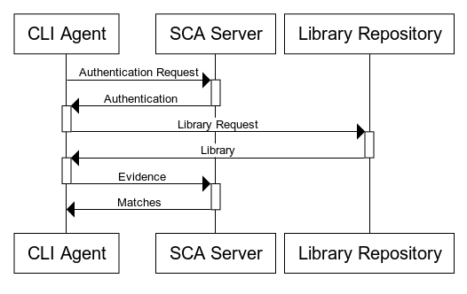
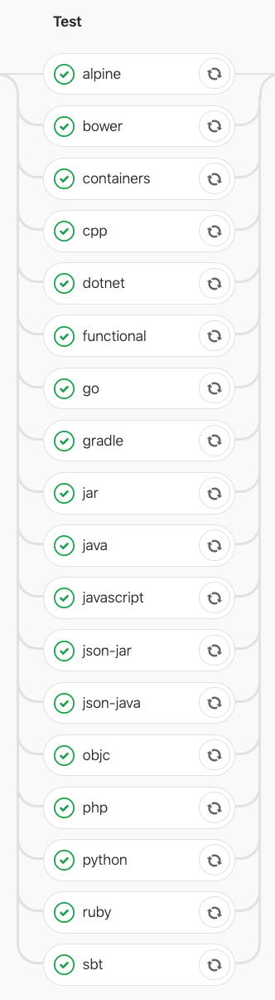

Where is My Cassette? Mocking System Testing using Capture and Replay
Introduction
Software Composition Analysis (SCA) has gained traction in industry with offerings from various companies. It helps developers identify vulnerable open-source libraries used in the software they develop. The following picture shows the architecture of an SCA system:
In an SCA system, a customer scans their applications using a scanner software, which will then send the evidence of third-party dependencies to a server for matching with known vulnerabilities, whose data stored in a vulnerability database. The vulnerability database itself is curated by a team security researchers in years.
Veracode provides an Agent-Based Scan service using a Command-Line Interface (CLI) agent that the customers run on their own machines to scan for vulnerable libraries used by their applications. The SCA CLI agent sends the evidence of third-party libraries to a data server, which matches them with known vulnerable libraries in the database.
Veracode's CLI agent runs on the customer's side, and it is important to ensure that it works correctly, given the environment the customer runs the agent in. There are three kinds of automated testing that we perform for the CLI agent:
Unit testing, which is the test that the output or behavior of methods are correct, given some input.
Integration testing, which is to actually execute the agent in various configurations, but scanning mocks instead of actual projects. Here we observe the actual output of the agent, such as its return value. There is no actual communication with the SCA vulnerability database server.
System testing, which is to actually execute the agent for scanning real projects and observe its behavior. Here the test checks the correctness of the actual messages sent by the agent to the server, which constitute the output of the agent.
In this article we discuss our approach to system testing, which, in order to test for the output correctness, generates checks using a capture mechanism and perform the actual test using a replay mechanism. The advantage of using such mechanisms is that it allows us to mock the SCA server and the library repositories during agent run, such as when issues are detected by the tests, we will be able to immediately localize as an issue belonging to the agent itself. As at the time of writing, for Veracode agent-based scan, the system testing has been implemented for real project scans on the Linux platform, and the same for Windows platform is planned.
Testing Objectives
Testing can be done for various purposes, such as for testing the usability and performance of the software being developed. Here our strategic purpose of performing system testing is to detect regression, that is, the reduction in the quality of the CLI agent, which potentially happens as the agent is being updated. Particularly, with our system testing we want to ensure that the CLI agent and the SCA server, as well as the library repositories work well together, particularly after making updates to the source code of the CLI agent.
The technical objectives include two:
To ensure that the agent actually performs the computation that we expect of it. That is, for validation.
To ensure that the result of the computation is what we expect. That is, for ensuring correctness.
It should be obvious that the major limitation of testing is in the limited number of ways we can validate or ensure correct the software under test. We cannot ensure that the software will be have correctly if the particular behavior is untested. In other words, it is unable to ensure that something unexpected will never happen.
Testing is typically done by executing the software or part of it, and observe the outcome. Validation can be performed by observing that the execution does reach some favorable end points (no exceptions, hangs, etc., unless these are what we test the software for), whereas correctness can be determined by observing that whenever a favorable end state is reached, the computation result matches expectation.
Capture and Replay
The following message sequence chart shows a simplification of the interactions among the CLI agent, the SCA server, and the library repository (e.g., Maven central, PyPi, etc.) when the CLI agent scans a repository:

The purpose of our system testing is to test the interactions between the SCA system's components, where it needs to check that the proper interaction is actually performed (validation), and that the content of the interaction is as expected (correctness). The CLI agent is a highly complex software, which limits us into performing black-box testing only. In black-box testing, we check for the outputs of the system under test without considering the implementation details of the system itself. Therefore, when scanning a project implemented in a particular language or build system, we test that the CLI agent sends the correct requests to the SCA server. This is because we consider the requests to be the outputs of the CLI agent. As we can see here, we perform validation by observing that the CLI agent actually sends the requests during its execution, and we ensure correctness by observing that each time the CLI agent sends a request, it sends the correct one.
Here we need to define what is a correct request. We define a correct request to be a request that matches our record, when the same project was scanned last. Therefore, there is a need to store the requests for a successful run once, for comparison with subsequent runs.
Not only the requests, we also need to record the responses sent back by the SCA server and the library repository to the CLI agent. These responses are from the previous successful run, so that when the failure occurs in repeat runs, we can isolate the cause to be that of the CLI agent and not due to changes and failures in the remote systems (the SCA server or the library repository).
The system testing framework thus supports two separate activities:
The capture of the interactions (requests and responses). Here,
mitmdumpfrom the mitmproxy suite is used.mitmdumpis started with a custom script that logs all requests and responses to JSON files. In this activity, the framework executes the agent and records the agent's HTTP requests, together with the QA SCA server's and library repository's responses. The raw requests and responses are collated into a cassette (so they can later be replayed without actually contacting the servers) and a JSON file containing all requests made.The replay of the interactions (requests and responses) for testing. This is the actual test execution. Here, when the agent sends a request, the request reaches a local proxy (
mitmdump), which then forwards it to a local mock server, implemented using Sinatra. The local server then responds to the CLI agent by sending the recorded responses in the cassette back to it, via the proxy. When the CLI sends an evidence query to the server, the framework tests that the query matches the recorded, previously-sent query during the capturing process.
An important thing to remember here is that the agent does not test for the consistency of the responses from the SCA server and the library repository with previously-recorded responses. That is, the previously-recorded responses are only used for replaying the responses of the SCA server and the library repository to the CLI agent. This is because the test subject is the CLI agent, and therefore we focus our effort in matching the requests with the recorded requests, since the requests are the outputs of the agent.
The CLI agent supports scanning projects implemented using a variety of
languages and build systems from Java Maven projects to Objective-C with
Cocoapods and even C/C++ with make. Due to a large number and variety of
tests, the scanned projects are divided into test suites for which currently
there are 17. The suites and the functional testing are executed in parallel
(whenever CPU resources are available) in the Gitlab CI. The name of the CI test
job indicates the kind of repositories that are scanned by the CLI agent for
testing. The following shows all the suites as shown by the Gitlab CI web
interface, but also including the integration testing job, whose name is
functional.

Afterthoughts
System testing for a client/server system has many facets. Here we have discussed several of them, including matching network interactions. At the moment we cannot guarantee that our design has been optimal. Our framework has weaknesses, the most important one is that changes in the environments may cause test failures. For some of the example repositories that we scan, the specified dependency version constraints in the build file can be too weak such that the the replay fails not because of regression, but because dependency version numbers that are detected in new scans do not match the recorded version dependencies. For issues such as these, future improvements can be made, such as having a mock library repository that does not (frequently) update the versions of the libraries it host.